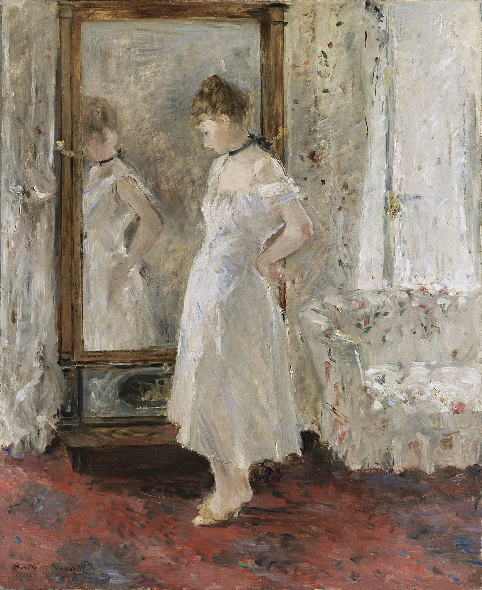
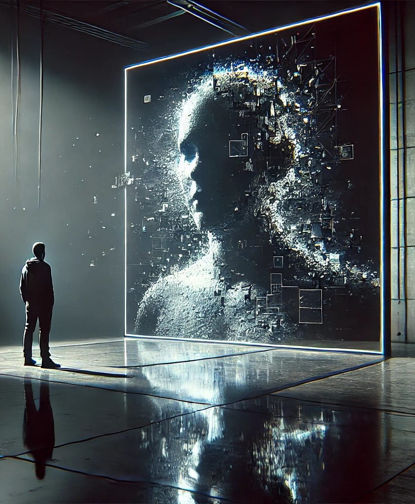
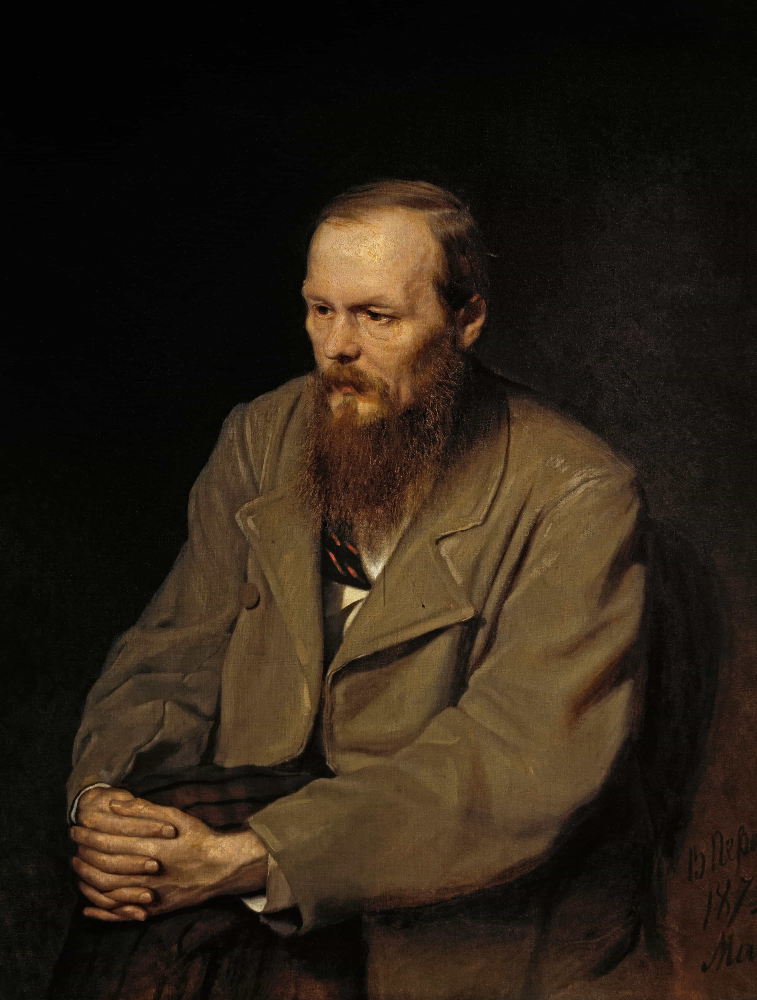

The Psyche Mirror: Revolutionizing Self-Reflection in the Digital Age
Introduction
In a world where technology continues to reshape our daily lives, imagine a virtual reality tool that doesn't just reflect your physical appearance, but provides a stunning 3D visualization of your mind, emotions, and thought patterns, analyzed with the depth and insight of Fyodor Dostoevsky. This is the Psyche Mirror – a groundbreaking tool that could revolutionize how we understand ourselves, making profound self-reflection as routine and intuitive as checking your hair before leaving the house.
The Psyche Mirror represents a potential paradigm shift in our approach to self-understanding. By combining cutting-edge neurotechnology with the psychological depth reminiscent of Dostoevsky's literary insights, this innovative concept promises to make the abstract world of our minds tangible and interactive.
The Psyche Mirror introduces the concept of "mental hygiene" as an essential daily practice for maintaining and improving psychological well-being, much like physical hygiene. This routine involves regular self-reflection and mental adjustment to manage stress and refine emotional responses. By using the mirror to align mental states with daily goals, and address underlying psychological issues, users can cultivate a deeper, more consistent sense of mental clarity and resilience.

Berthe Morisot's 1876 painting La Psyché
The Idea in Plain Terms
Put on a heart-rate monitor and watch the number while trying to relax. The number climbs. The monitor is working correctly. Watching is an activity, and the activity has a pulse. To get a resting rate you have to stop looking, which makes the reading you most want the one you cannot take while taking it.
The Psyche Mirror proposes to do for the mind what the monitor does for the heart, rendering an interior state as something visible and adjustable. It inherits the same problem in a sharper form. Self-observation does not add noise to a mental state; it is a mental state, and a well-characterised one. Duval and Wicklund (1972) showed that turning attention on the self pulls behaviour towards whatever standard the person holds, immediately and measurably.
Two limits sit under the whole design. The first is that people report their own minds badly. Nisbett and Wilson (1977) found that subjects confidently explained choices by causes the experimenters had ruled out, and Schwitzgebel (2008) argues the unreliability reaches even simple questions about current experience. The second is that reading mental content from outside is early work. Huth et al. (2016) mapped where categories of meaning sit in cortex, and Tang et al. (2023) reconstructed the gist of continuous language from fMRI, both after many hours of training on each individual, and the second only with the subject cooperating. A participant who counted backwards defeated the decoder.
What follows describes a device that does not exist, built on capabilities that partly do. The useful question is which parts are which, and the sections below try to keep the two apart.
Background
The concept of The Psyche Mirror has a rich cultural and historical context. The term "psyche" originates from Greek mythology, where it personified the human soul or spirit. By the 18th century, the term "psyche mirror" (or "miroir psyché" in French) referred to a specific type of full-length, tilting mirror, reflecting a material application. It was in the 19th century that "psyche" was incorporated into psychological discourse to denote the human mind or soul, coinciding with the emergence of psychology as a distinct field. This evolution of meaning is elegantly represented in Berthe Morisot's 1876 painting La Psyché, which depicts a woman gazing into a mirror, prompting viewers to reflect on themes of introspection and identity.
In contemporary context, The Psyche Mirror represents a convergence of advanced technology and psychological insight, aimed at revolutionizing self-reflection. Rooted in the long-standing human quest for self-understanding, this concept builds upon centuries of philosophical and psychological exploration of the mind. Self-reflection, a cornerstone of personal growth and mental well-being, has been valued across cultures and throughout history for its ability to foster self-awareness, emotional regulation, and improved decision-making.
In psychology, introspection - the examination of one's own mental and emotional processes - has been a fundamental tool since the field's inception. The modern Psyche Mirror concept takes this practice to new heights by leveraging cutting-edge neurotechnology and artificial intelligence to provide unprecedented insights into the human psyche. By making abstract mental processes visible and interactive, it offers a novel approach to self-understanding, potentially transforming how individuals engage with their inner worlds.
Core Technology and Key Features of the Psyche Mirror
The Psyche Mirror's functionality relies on a synergy of advanced technologies, offering a comprehensive view of one's mental landscape:
1. Brain Mapping and Neural Imaging
Leveraging current neuroimaging techniques and anticipated advancements in brain-computer interfaces, the Psyche Mirror imagines a future system for mental visualization. The proposed technology would infer and render patterns associated with thoughts, emotions, and memories with limited and testable fidelity. Two results mark where that fidelity currently stands. Huth et al. (2016) built voxel-wise semantic maps from hours of narrative listening and found the layout of meaning categories consistent across individuals. Tang et al. (2023) went from maps to reconstruction, recovering the gist of what a listener was hearing or imagining, in paraphrase rather than in words, at a temporal resolution set by the haemodynamic response of several seconds. Neither is a readout of a thought as it forms.
The centerpiece is a detailed, rotating 3D model of the brain, alive with pulses of light, color changes, and subtle movements representing ongoing mental processes. Delicate strands of light crisscross the model, showing neural pathways that light up in cascades as thoughts form and memories are accessed, allowing users to literally see their train of thought.
2. Artificial Intelligence and Data Interpretation
The convergence of neurotechnology and artificial intelligence enables the Psyche Mirror to translate complex neural signals into clear, comprehensible visual representations. Sophisticated AI algorithms and machine learning models, trained on extensive psychological and neuroscientific datasets, interpret vast amounts of neural data, identifying patterns and drawing connections that might escape human observation.
This technology allows for detailed emotional centers mapping, with key areas like the amygdala, hippocampus, and prefrontal cortex distinctly identifiable and pulsating with colors representing various emotional states.
3. Virtual Reality Interface and Thought Visualization
An advanced virtual reality interface creates an immersive, interactive 3D environment. Users can navigate and interact with their mental representation, exploring a cosmic-like field of memories and thoughts. Smaller bubbles appear and disappear around the central brain model, representing current thoughts and preoccupations. As users focus on different thoughts, relevant memories light up like stars, showing how their current state connects to past experiences.
4. Dostoevskian Analysis
The mirror's most revolutionary feature is its ability to analyze the mental landscape with the depth and insight reminiscent of Fyodor Dostoevsky's literary works. Powered by natural language processing models trained on Dostoevsky's works and a wide range of psychological theories and case studies, this feature provides nuanced, contextually rich interpretations of mental states. It exposes underlying motivations, conflicts, and hidden patterns in the user's psyche, offering insights that go beyond surface-level observations.

Universe 00110000
This integrated approach would let users explore modeled neural activity, inferred emotional states, and memory associations as interactive elements within the virtual environment, providing a tool for self-reflection and analysis.
The Dual Model of Mental States
The Psyche Mirror's functionality is fundamentally shaped by the observer effect, the principle that the act of observation changes the phenomenon being observed. In psychology this has a specific name and a body of evidence behind it. Duval and Wicklund (1972) called it objective self-awareness: attention directed at the self triggers comparison against a salient standard, and the person then either closes the gap or escapes the attention. The effect is no measurement artefact to be subtracted. It is the mechanism by which self-reflection changes anything, and it produces two distinct states:
Unobserved State
The unobserved state provides a baseline of the user's typical thought patterns, emotions, and behaviors as inferred from passive measurement. It approximates the mind at rest rather than giving a final or transparent snapshot of the user's mental landscape. These snapshots serve as reference points for comparison and analysis.
Observed State
The observed state reflects the mental landscape during active engagement with the Psyche Mirror. It is inherently altered by the observer effect - the very act of looking into the mirror changes the user's mental state. This state is characterized by:
- Activation of Self-Reflective Processes: Areas of the brain associated with self-awareness and introspection activate, altering the mental landscape being observed.
- Altered Emotional States: The knowledge that one is observing oneself can lead to changes in emotional responses and thought patterns.
- Cognitive Load: The effort of analyzing one's own mental state adds a cognitive burden that wouldn't be present in the unobserved state.
Observer Effect and Its Implications
Interpreting the mirror's output means holding both states in view at once, and an honest interface has to say which one produced any given reading. There is a second reason for care here. Trapnell and Campbell (1999) separated two kinds of self-focused attention that look identical from outside: reflection, driven by curiosity about oneself and associated with openness, and rumination, driven by threat and associated with neuroticism and worse outcomes. A tool that makes self-examination continuous and frictionless raises the rate of both. Which one it amplifies in a given user is an empirical question the design cannot settle in advance, and it is the first thing any trial of such a device would have to measure.
User Experience
As you put on your VR headset, you are seamlessly transported into your secure, personal virtual environment. The Psyche Mirror immediately recognizes you and initiates the scanning process, transforming your surroundings into a vivid 3D visualization of your mental landscape. Immersed in this dynamic space, you navigate through various aspects of your mind, exploring thoughts, emotions, and memories. You can zoom in on specific areas for deeper analysis, engaging with guided exercises designed to alter your mental state in real time, while the visualization adapts to reflect these changes.
Throughout the session, the mirror's AI provides interpretations, highlighting patterns and possible areas for growth. As you work through these, you gain a clearer account of your own mental processes. The session ends with a period of reflection, where you review what came up and set goals for the next one. The process sharpens self-awareness and carries that sharpening into the sessions that follow.
Interface Design and Interaction
- Dual Display: A split-screen view showing an unobserved state snapshot alongside the current observed state. Clear visual cues indicate which display is affected by the observer effect.
- Comparative Analysis: AI-driven highlighting of differences between unobserved and observed states, explicitly noting changes likely caused by the observer effect.
- Correction Tools: Tools for self-reflection and mental adjustment are provided, with reminders that using these tools further alters the observed state.
- Temporal View: Observe how your mental state has changed over time, identifying patterns and trends in your psychological wellbeing.
- AI Highlights: Areas identified as noteworthy gently pulse or glow, drawing your attention to potential areas of stress, recurring thought patterns, or opportunities for growth.

Portrait of Fyodor Dostoevsky by Vasily Perov (1872)
Dostoevskian Analysis: Unveiling Hidden Depths
The mirror's most distinctive feature is its ability to analyze your mental landscape with the depth of a literary master, reading the motivations behind an action rather than the action, including motivations you would not have named yourself. By identifying the fears, insecurities, and desires that shape your choices, the mirror addresses the "why" behind the "what."
Nisbett and Wilson (1977) established that a person's own account of why they acted is often constructed after the fact rather than read off the cause, which is the gap this feature is built for. A literary reading offers an interpretation the user had not considered, in a register that carries weight, and the user tests it against their own behaviour over the months the mirror records.
Much like the characters in Fyodor Dostoevsky's literary works, we often harbor conflicting desires and motivations. The mirror untangles these internal conflicts, revealing the complex interplay between conscious aspirations and subconscious drives. It also pinpoints the lingering effects of past traumas, even those buried deep within the subconscious, helping you recognize how these experiences continue to influence your thoughts, emotions, and behaviors.
Additionally, the mirror prompts users to confront fundamental existential questions about their purpose, values, and place in the world. This exploration leads to a deeper understanding of oneself and one's existence, providing a unique opportunity for profound self-reflection and personal growth.
Furthermore, by making mental states visible, the mirror allows for early detection of potential issues, preventing them from escalating. The deep insights provided by the Psyche Mirror can accelerate personal growth and self-improvement, giving users a clearer understanding of their thought patterns and behavioral tendencies. This empowerment enables them to make more conscious choices and foster positive change.
As individuals gain a better understanding of their own minds, they may develop greater empathy for other. Ultimately, the mirror could foster a society more attuned to emotional well-being, enhancing both personal and collective well being.
Privacy and Security
Data Protection and User Control
- Encrypted Personal Space: Each session runs in an encrypted environment, with inference kept on the user's own hardware wherever the compute allows it. Encryption protects data in transit and at rest and does nothing about what the operator of a service can see, which is why where the inference runs matters more than how the storage is secured.
- User Control: Users can inspect, export, and delete their data. Deletion has to reach the derived models as well as the recordings, since a model trained on one person's neural data carries that person's information forward after the source files are gone.
- Consent as a Working Control: Tang et al. (2023) found their decoder failed on uncooperative subjects and failed on subjects it had not been trained on. Mental privacy currently rests on those two facts rather than on policy. A device built to be used willingly, every day, and trained on its user removes both protections by design, which is the security question this concept has to answer before the engineering one.
Conclusion
The Psyche Mirror makes an interior state visible and adjustable, and the components it needs are partly built. Semantic maps of meaning hold their layout across individuals (Huth et al. 2016), continuous language can be reconstructed in paraphrase from non-invasive recording (Tang et al. 2023), and self-directed attention moves behaviour toward whatever standard the person holds (Duval and Wicklund 1972).
The dual display is what makes the device work. Observation changes the state observed, so the mirror shows the unobserved baseline and the observed state together, and the comparison between them is the reading. That turns the observer effect from an obstacle into the instrument.
Two design decisions carry the rest. The first is which kind of self-attention the interface cultivates, since reflection and rumination look identical from outside and lead in opposite directions (Trapnell and Campbell 1999). The second is where the model runs, because a decoder trained on one person and used daily is the most intimate record anyone has ever kept, and it belongs on their own hardware.
References
- Duval, Shelley, and Robert A. Wicklund. A Theory of Objective Self-Awareness. Academic Press, 1972.
- Huth, Alexander G., Wendy A. de Heer, Thomas L. Griffiths, Frédéric E. Theunissen, and Jack L. Gallant. "Natural Speech Reveals the Semantic Maps That Tile Human Cerebral Cortex." Nature 532, no. 7600, 2016, 453–458.
- Nisbett, Richard E., and Timothy D. Wilson. "Telling More Than We Can Know: Verbal Reports on Mental Processes." Psychological Review 84, no. 3, 1977, 231–259.
- Schwitzgebel, Eric. "The Unreliability of Naive Introspection." The Philosophical Review 117, no. 2, 2008, 245–273.
- Tang, Jerry, Amanda LeBel, Shailee Jain, and Alexander G. Huth. "Semantic Reconstruction of Continuous Language from Non-Invasive Brain Recordings." Nature Neuroscience 26, no. 5, 2023, 858–866.
- Trapnell, Paul D., and Jennifer D. Campbell. "Private Self-Consciousness and the Five-Factor Model of Personality: Distinguishing Rumination from Reflection." Journal of Personality and Social Psychology 76, no. 2, 1999, 284–304.